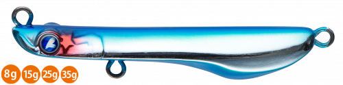
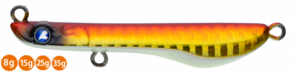
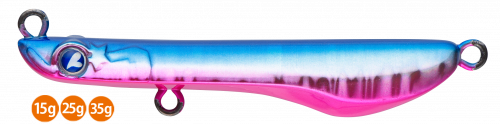
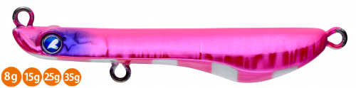
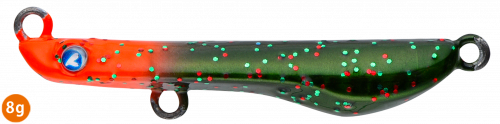

メタルシャルダス
（METAL Shalldus）
メタルシャルダスはBlueBlue（ブルーブルー）のメタルブレードベイトです。
シャルダスのブレードの力を、メタルソリッドボディで今まで届かなかったポイントへ届けるモデル。めいっぱいの後方重心で強い向かい風でもよく飛び、コンパクトなボディとブレードのフラッシングで、メタルジグを追えない魚やスレた魚にも効きます。

画像出典:BlueBlue公式HP
スペック
- メーカー
- BlueBlue（ブルーブルー）
- タイプ
- メタルブレードベイト（シンキング）
- ウェイト
- 8g／15g／25g／35g
- 全長
- 40mm（8g）／50mm（15g）／60mm（25g）／70mm（35g）
- ブレード
- コロラド#1.5（8g）／ウィロー#2〜#3.5（15〜35g）
- ターゲット
- 青物・サバ・シーバス・ヒラメ
- 価格
- 1,330円〜1,730円（税別）
▼今すぐチェック

メタルシャルダスの特徴
コンパクトなメタルボディとブレードで、遠くのポイントまでハイアピール
-
ブレード系最高クラスの飛距離
めいっぱいの後方重心のメタルボディで、強い向かい風や横風でもよく飛びます。ライトショアジギングで飛距離は大きな武器です。
-
コンパクトなシルエットとハイアピール
メタルソリッドボディでシルエットは超コンパクト。ブレードのフラッシングで、メタルジグを追えない魚やスレた魚にも口を使わせます。
-
重さごとに巻き心地を調整
8〜15gは波動が強めで、風が強くても引き抵抗を感じやすい設定。25〜35gは巻き心地が軽く、遠投した先から長く巻いても疲れにくい設定です。
メタルシャルダスの使い方
基本はただ巻き。投げて巻くだけで、ブレードが回ってフラッシングと波動でアピールします。
巻き速度とカウントダウンでレンジを調整できるので、表層から底付近まで探れます。反応がないときは、リフト＆フォールでブレードを回しながら落とすのも効果的です。
メタルシャルダスの得意な状況
ライトショアジギングでの青物やサバ、サゴシ狙い。メタルジグに反応しないときや、ベイトが小さくてシルエットを小さくしたいとき、風が強くてほかのブレード系ルアーが届かないときに向いています。
ワンポイント
表層をデッドスローで引きたいときや、シーバス狙いの近距離戦では、樹脂ボディのシャルダス20に持ち替えるのがおすすめです。
メタルシャルダスのウェイトの使い分け
| モデル | 全長／自重 | 得意な場面 |
|---|---|---|
| 8g | 40mm／8g | ライトタックルで小型の回遊魚やメッキに |
| 15g | 50mm／15g | 港湾や堤防のライトショアジギングに |
| 25g | 60mm／25g | サーフや堤防での遠投に。巻き心地が軽い |
| 35g | 70mm／35g | 大遠投が必要な場所や、風が強いときに |
1本のタックルで幅広い重さを扱えるように設計されています。届かせたい距離と使うタックルで重さを選びましょう。
人気カラー
公式ラインナップから4色を紹介します（カラー名は公式の表記のまま）。

#04 アカキングローベリー赤金にグローベリーをプラス。濁りやマズメの暗い時間帯に。

#07 ブルーピンクブルーとピンクの定番カラー。朝マズメの青物狙いに。

#11 ファニーピンクゼブラピンクにゼブラ柄を入れたアピールカラー。反応を見たいときのローテーションに。

#12 レッドシーガBlueBlueらしい個性派カラー。定番色に反応がないときに。
画像出典:BlueBlue公式HP
メタルシャルダスに似ているルアー
-
 ジャックアイマキマキ
ハヤブサ
詳細はこちら＞
ジャックアイマキマキ
ハヤブサ
詳細はこちら＞
ただ巻き専用のブレードジグ。同じく巻くだけで誘える定番として。
-
 ボンバースピン
メジャークラフト
詳細はこちら＞
ボンバースピン
メジャークラフト
詳細はこちら＞
ブレード付きのメタルジグ。もっと重いウェイトで遠投したいときに。
-
 ビッグバッカー Eブレード
ジャッカル
詳細はこちら＞
ビッグバッカー Eブレード
ジャッカル
詳細はこちら＞
7g〜60gまでそろうブレードジグ。サゴシやサワラ狙いで重さを細かく選びたいときに。